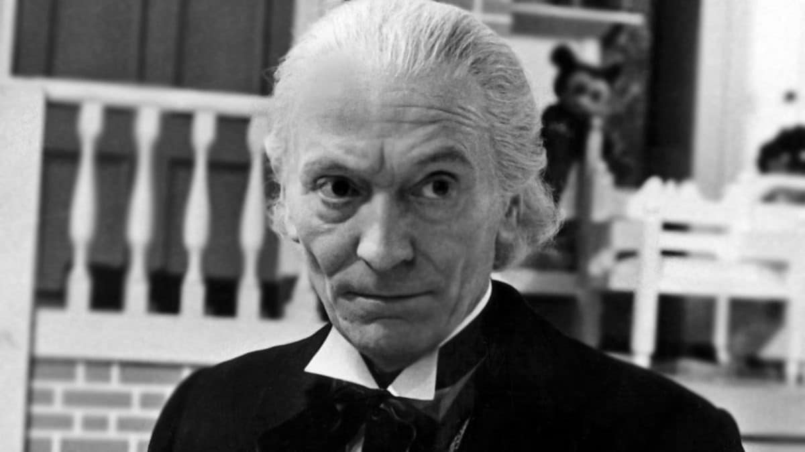

Petite description
Le créateur

Le fondateur de notre agence n’est pas un voyageur ordinaire. Connu sous le nom énigmatique de Docteur
Who, il est un Seigneur du Temps originaire de la planète Gallifrey. Doté d’une intelligence hors du
commun et d’un courage inébranlable, il a consacré sa vie à protéger les peuples et les civilisations
menacées à travers l’univers.
Depuis des siècles, le Docteur parcourt le temps et l’espace à bord de son vaisseau légendaire, le
TARDIS, dont l’apparence extérieure est celle d’une cabine téléphonique de police bleue des années 1960,
mais dont l’intérieur est infiniment vaste et complexe. Capable de se régénérer, il a traversé de
nombreuses incarnations, chacune avec sa personnalité unique, mais toujours guidé par la même mission :
défendre la vie et célébrer laa diversité des mondes.
La Naissance
Notre agence n’est pas née comme les autres. Son origine remonte à une aventure extraordinaire en
Angleterre, au cœur de Buckingham Palace. Alors qu’un mystérieux mal venu d’une autre dimension menaçait
la reine Élisabeth I, c’est le Docteur — voyageur du temps et fondateur de notre maison — qui intervint.
Grâce à son génie et à son fidèle TARDIS, il repoussa la menace et sauva la couronne britannique.
En signe de gratitude éternelle, la reine offrit au Docteur des bureaux secrets, dissimulés dans les
sous-sols du palais. C’est là, dans ce lieu chargé d’histoire et de mystère, que fut fondée notre
agence. Depuis, chaque voyage que nous proposons est inspiré par l’esprit d’aventure du Docteur :
franchir les frontières du connu, explorer l’inattendu et transformer chaque destination en une
véritable épopée.
Accéder aux bureaux secrets de l’agence n’est pas donné à tout le monde. L’entrée, dissimulée dans les
sous-sols de Buckingham Palace, est protégée par des mécanismes temporels et des énigmes que seuls les
véritables voyageurs dignes peuvent résoudre. Chaque visiteur est soumis à une sélection stricte, car
franchir le seuil du TARDIS ou de nos salles de mission n’est pas une simple formalité : c’est un
engagement à respecter les règles du voyage dans le temps et de l’espace.
Ceux qui osent défier ces règles s’exposent à de graves conséquences. Les couloirs du palais gardent
encore la mémoire de ceux qui ont tenté de manipuler les lois temporelles à leur avantage… et qui ont
disparu dans les méandres d’une dimension inconnue. Ainsi, notre agence n’est pas seulement un lieu de
départ vers l’aventure : c’est un sanctuaire où la discipline et le respect des mystères de l’univers
sont la clé pour voyager en toute sécurité.